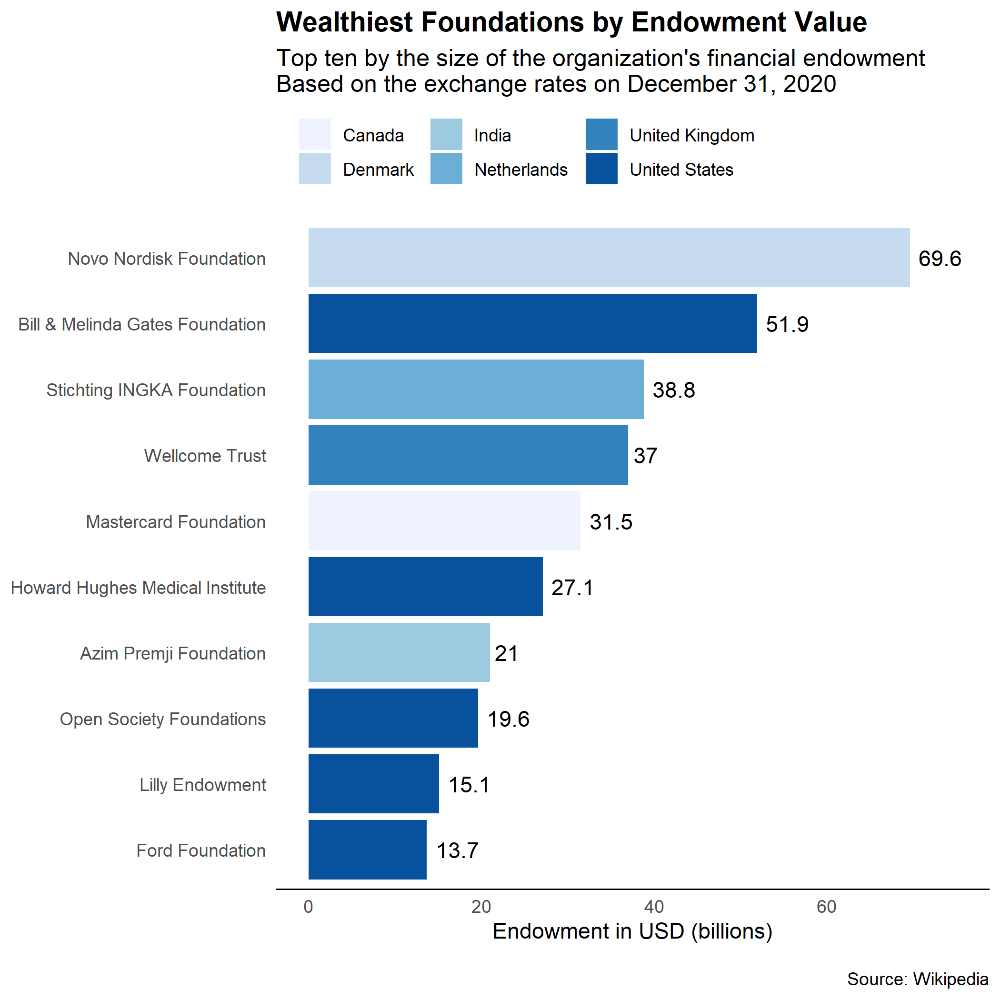

Blog Post
NEW TRENDS IN THE DEVELOPMENT SECTOR
Development sector has experienced a transformation that has affected how social interventions are designed and executed.
Opinion
April 2022

Development sector has experienced a transformation that has affected how social interventions are designed and executed.
April 2022
Over the last decade, the development sector has experienced a transformation that has affected how social policies and interventions are designed and executed. Here I discuss some of the key trends that I think have affected the development
sector the most in the last few years. While each of these trends is positive in many ways, policymakers and development sector practitioners should be considerate about when and where to apply new tools and approaches. Here are
some of the key trends,
The most noticeable impact comes from how technology has been adopted to address developmental challenges. New technological solutions are being developed and many existing technologies are being modified to address the challenges faced by the underserved. For example, in the digital financial services sector, new products and services are being designed keeping in view the unique challenges and opportunities presented by various population segments. Taking advantage of the network effect, low-cost products are being delivered using the most cost-efficient channels. Existing infrastructure is being leveraged to deliver services such as credit and insurance to current and prospective customers. Fintechs, which are already disrupting the financial landscape, are providing healthcare and financial services to the underserved and are using innovative ways and incentives to onboard new users. Conventional banks, which were previously restricted by their brick-and-mortar model, are also catching up through mobile banking and aggressive digital marketing strategies. Using new technological innovations and business cases, banks are reaching previously unbanked segments and are employing various marketing techniques to activate dormant users. While the underlying assumptions are questionable and a lot more research needs to be conducted to establish a cause and effect relationship, technology startups are nevertheless convincing funding agencies to provide grant support to fund social experiments which they believe have the potential to scale. The idea they sell is that social problems can be addressed while making a profit.
Besides technology, the usage of data in designing and evaluating development interventions has increased. At least there is an increased urgency and motivation to utilize data in the social sector. While in the past, developmental projects and policies were mostly based on experience and foresight, now they tend to be loosely based on evidence and data. I say loosely because the real-time data in the development sector is rare and the quality is often poor. Nevertheless, new statistical techniques and methods are deployed to measure the impact from multiple interventions to identify and support the most cost-effective programs. Several consultancy firms have sprung up to help donors in choosing the right interventions to fund by employing ‘evidence-based’ and ‘data-driven’ strategies.
Because of this new trend, individuals and consultancy firms looking to secure donor funding are very particular about including data in their bids. Proposals backed up by data are more likely to be entertained and given serious thought. Logical conclusions are not enough if they are not supported by some form of data. With the introduction of Randomized Controlled Trials (RCTs) and other rigorous statistical techniques, assessing cost-efficiency, effectiveness, and scalability has become the norm. More and more social sector players are now resonating ‘evidence-based’ and ‘data-driven’ approaches to developmental challenges. The RCTs have become the gold standard for impact evaluations, and are deployed to help development practitioners understand the context better and design interventions that are more likely to produce desirable results. They also help test interventions on a small scale first before replicating them on a large scale. By establishing cause-and-effect relationship, RCTs are thought to help in designing the most effective interventions. Program monitoring and evaluation have become institutionalized and most social organizations now have dedicated resources to carry out these functions.
Technology presents immense potential for good if deployed in a befitting and gradual manner. Unfortunately, the technological divide can do more harm than good, especially to the underserved and underprivileged communities who do not have equal access to the latest technology. This technological divide can further worsen income inequality, a curse of widespread and unbridled capitalism. The proliferation of technological solutions also threatens to destroy many labor-intensive jobs that are dominated by low-income and poor communities. For those individuals who are not technically aware, technological solutions can end up making things more complicated and expensive. The pace at which technology is being pushed is quickly destroying traditional channels. This presents a major disruption to the lives of those who are dependent on these channels. Beyond price and efficiency, traditional channels have the trust advantage that is very difficult to imitate by the tech industry, which is notoriously known for price skimming and invasion of user privacy. Another key issue is that technological solutions are not necessarily designed for the greater good. Technology companies do their utmost best to try and protect their innovation through intellectual property rights and competitive practices. The result is that technological innovation is accessible and available only to those who represent a commercially viable segment.
On the data front, poor and technologically less savvy individuals are not aware of their digital protection and privacy rights. Technological companies that see these individuals as potential customers mine their data without explicit consent. Another problem is that technology companies are excellent at data manipulation which can seriously affect data integrity. In developing economies, data gathering techniques are not well established and the lack of skilled data scientists make it expensive to analyze the data. Those who are highly skilled in data analytics do not find the development sector as an attractive prospect because of low salaries and low employment opportunities.
In the past, development efforts were largely led by public institutions. Developed economies would set up aid agencies which in turn would provide funding for developmental projects in low-income countries. This model is still dominant with state-led and multilateral institutions providing the bulk of the funding for developmental projects. However, in the past decade, we have seen a rise in the amount of funding being provided by the private sector. Private actors are now a very active part of the social sector and work closely with public institutions in both designing and implementing development initiatives.
Private donors have had an impact on how development projects are carried out. They have not only challenged the traditional funding models but are also tackling challenges that were previously ignored by the public sector due to lack of funding, research, or priority. The amount of private funding has increased so much that there now are dedicated consultancy firms, such as Bridgespan, that help private donors in developing donation strategies. These firms work closely with philanthropists to identify opportunities for impact investing. Unlike national aid agencies, private donors treat their funding as investments and care about the most impact ‘per dollar’. I am a big proponent of impact investing and believe that this model, if backed up by credible research and data, can produce desirable results and help design better pro-poor initiatives. I think effective and mutually beneficial public-private partnerships can catalyze innovative solutions to social problems. However, impartiality is a prerequisite for these partnerships to be effective in the true sense.
The graph above shows the the top 10 wealthiest charitable foundations in the world. Many of these foundations are leading research in health and education sectors.
The proliferation of private funding has also led to another change; philanthropy is conducted like business. This new kind of philanthropy is termed philanthrocapitalism where private donors carefully assess the ‘return on their investment’. They engage consultancy firms and experts to identify the social problems that are worth investing in and which have the potential to generate returns in the long term. They use ‘commercial viability’ as a criterion to decide which social enterprises or initiatives to support. They also set the agenda on which social problems require the most attention. Furthermore, with so many technology companies looking to tackle social problems, venture capital money is being thrown around to ensure a stake in the next disruptive model.
When it comes to dealing with the problems of the poor, it is difficult to justify commercial viability. Poor people cannot be treated like any other customers and there are moral considerations when products and services are pushed to skim profits from the poor who barely have any money to make investors rich. Neverthless, some of the biggest private donors do not seem to be too concerned about profit-making in the short term, rather they focus on funding research and disruptive solutions that could potentially grow on a large scale.
The third key trend is that human development is no longer seen as a single dimension. For example, while previously, poverty was only measured along one dimension, income, it is now measured along multiple dimensions including quality of life, health, and education. The UNDP’s Multidimensional Poverty Index (MPI) measures poverty by taking into account 10 indicators along three dimensions. The index is a better measure than the poverty headcount ratio calculated at the national poverty line. In Pakistan for example, the poverty level at the national poverty line is 21.9% (World Bank), while multidimensional poverty is at 38.3% (UNDP).
The concept of ‘development’ has undergone an evolution and it is defined in a multitude of ways. It no longer considers economic growth as the cornerstone of development and instead focuses on other components of human development and intangible concepts such as freedom and quality of life. While these concepts may be intangible, they have real value. Many now stress that development is about creating equality of opportunity which will entail getting poor and marginalized communities on an equal footing to help them achieve the kind of life that they desire. In the past, development was a third-world problem; however, it is actively pursued by both developed and developing societies that have experienced an unprecedented level of inequality in the last few decades. After all, the categorization between developed and developing economies was based on economic indicators and not human development indicators. The new way of thinking has challenged the one-size-fits-all model of development. More emphasis is being placed on bespoke interventions that take into account the intricacies of communities and individuals being impacted.
Multidimensional development has also encouraged policymakers to work closely with local communities to understand the challenges at the granular level by capturing and analyzing maximum amount of information. Co-design and co-investment have become more acceptable and effective ways of designing interventions. Although there are serious gaps, I believe such approaches could create a sense of ownership in rural communities and encourage them to own and invest in projects. Furthermore, it can also help create trust between communities and development agencies, which are often criticized for imposing solutions rather than working with communities to understand the problems first.
The trends that I have discussed here are not inclusive and there are other factors that have affected how development is carried out. The debate within the economic domain is also challenging the ways in which development is being carried out and an increasing number of economists are crtitical of classical economic theories of growth. With more critical research exploring the fundamental assumptions behind economic growth theories, we are understanding the interaction of different market forces and actors that essentially drive growth. The trends discussed here are likely to persist and will be refined with time.
BlogThe Clash That Defined Modern Economics by Wapshott is an account of one of the most important debates in modern economics.